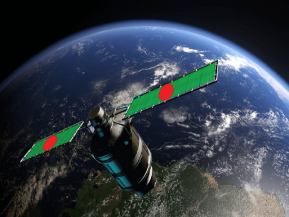

Pillars of "Bangladesh 2.0"
Innovation
Accelerating research, development, and advanced technological solutions to drive national resilience and modern economic growth across all major sectors.
Connectivity
Bridging traditional silos between academia, tech startups, policymakers, and industry to create a unified, high-impact national collaborative network.
Sustainability
Harmonizing rapid industrial and economic expansion with environmental stewardship, climate resilience, and scalable sustainable development models.
Partnership
Leveraging robust public-private collaborations to serve as the primary execution engine for long-term implementation and nationwide scalability.
The Vision of Future
Bangladesh 2.0 envisions a resilient, tech-driven nation rooted in democratic governance, economic equity, and institutional integrity. By leveraging digital transformation, sustainable industrialization, and youth-led innovation, the country aims to transition from a developing economy into a global hub for smart governance and green growth. Empowered communities, modernized education, and transparent public institutions form the foundation of a prosperous, inclusive future where every citizen thrives safely and equitably on the world stage.
Innovation
Accelerating research, development, and advanced technological solutions to drive national resilience and modern economic growth across all major sectors.
Connectivity
Bridging traditional silos between academia, tech startups, policymakers, and industry to create a unified, high-impact national collaborative network.
Sustainability
Harmonizing rapid industrial and economic expansion with environmental stewardship, climate resilience, and scalable sustainable development models.
"The young generation is full of ideas, ambition, and natural entrepreneurship. He describes Bangladesh 2.0 as an opportunity to move away from creating mere "job seekers" toward enabling creative entrepreneurs."
Dr. Muhammad Yunus
Chief Adviser of the People's Republic of Bangladesh
Your Opinion Matters
| Questions | Select Your Opinion |
|---|---|
| Do you believe Bangladesh is on the right path toward becoming a developed nation? | |
| Do you believe Bangladesh is on the right path toward becoming a developed nation? | |
| Do you believe Bangladesh is on the right path toward becoming a developed nation? |
Recent News
Al Jazeera Media Network partnered with Beximco Communications Ltd. to broadcast the Al Jazeera English HD channel on AKASH DTH, Bangladesh's first-ever Direct-to-Home (DTH) platform, which uses Bangabandhu Satellite-1.

Bangladesh Launches new Satellite
Al Jazeera English HD is part of the lineup carried via this satellite infrastructure to bring international news and programming to Bangladeshi DTH households.
Bangladesh Launches new Satellite
AKASH DTH launched on May 19, 2019, utilizing Bangabandhu Satellite-1 to deliver high-definition television channels across Bangladesh, which has a pay-TV market historically dominated by cable.
Bangladesh Launches new Satellite
Bangabandhu Satellite-1 is Bangladesh's first geostationary communications satellite, launched on May 11, 2018, via a SpaceX Falcon 9 rocket from Florida.
Donate Today
Bangladesh 2.0 aims to redefine the nation’s trajectory by embracing cutting-edge technology, promoting inclusive growth, and ensuring sustainability.
With initiatives in renewable energy, digital transformation, and robust infrastructure.
Subscibe Newsletter
Bangladesh 2.0 aims to redefine the nation’s trajectory by embracing cutting-edge technology, promoting inclusive growth.
We promise not to spam you!